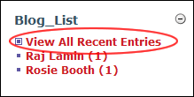

Viewing All Recent Entries
How to view all recent blog entries.
- Click the View All Recent Entries link on the Blog_List module. This displays all recent entries in the Recent_Entries module.

- Click on an entry title to view an entry in full.

All Recent Blog Entries Displayed